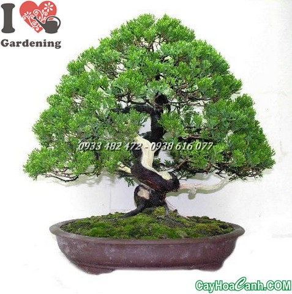

bo ma viet chu tieng viet
Demo
body la tổng thể
xin chào, day la ban demo.
day la the heading
day la the heading
day la the heading
day la the heading
day la the heading
day la the heading
Bold text
Italic text
Underline text
small text
strong text
viet doan van
span text(thuong duoc dung nhieu vi no de scc)

link to the google(ghep duong dan)
cách viết style color frontsize(kích cỡ chữ) front-family(front chữ), font-weight(kích cỡ chữ) font-style(kiểu chữ) line-height(chiều cao chữ khoảng cách trên dưới) text-decoration(gạch chân) text-align( căn lề) text-indent(viết lùi bao nhiêu) text-transform(viết hoa hay viết thường) cho html:
chọn đối tượng sau đó cho các thuộc tính vào
c1: viết thẳng vào nó style=color:blue
c2:dùng id: đặt id cho thẻ đó viết một lần duy nhất
c3:class: đặt tên class cho thẻ đó
c2,c3 chỉ dạt cho mot loại
dcachs dùng div
nhập kích cỡ width và height
border đường viền
background-image ảnh nền
backgrounf-color: màu nền
margin lề (lua chọn chiều,hoặc ko để lấy tổng thể )tạo khoảng cách giữa các khối .tạo khoảng cách bên ngoài
padding (như margin nhưng khác chức năng) khoảng cách từ trong ra
float dồn khối